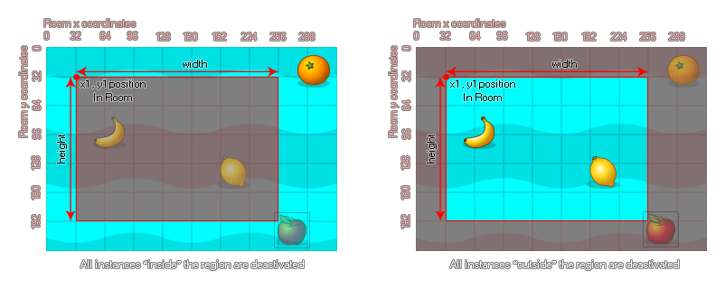

instance_deactivate_region(left, top, width, height, inside, notme);
| Argument | La description |
|---|---|
| left | La coordonnée x de la gauche de la région rectangulaire à désactiver. |
| top | La coordonnée y du sommet de la région rectangulaire à désactiver. |
| width | La largeur de la région à désactiver. |
| height | La hauteur de la région à désactiver. |
| inside | Indique s'il faut désactiver les instances à l'intérieur de la région (true) ou à l'extérieur (false). |
| notme | Indique si l'instance appelante doit être désactivée (true) ou non (false). |
Retours: N / A
Avec cette fonction, vous pouvez définir une région dans la pièce pour désactiver les instances précédemment activées. Cette région peut être marquée comme "à l'intérieur" ou "à l'extérieur" comme le montre l'image suivante: 
Vous pouvez voir dans l'image ci-dessus que l'instance "apple" est toujours inactive car, même si l'image-objet elle-même ne chevauche pas la région, la boîte englobante le fait. Ainsi, les instances sont considérées comme se trouvant dans la région spécifiée lorsque leur boîte englobante chevauche celle-ci, et l'état du masque de collision (précis ou non) n'est pas pris en compte.
REMARQUE: Si vous désactivez une instance au démarrage de la pièce (ex: à partir du code de création de pièce ou d'une instance créer un événement d'une instance dans la salle) tous les cas qui sont placés dans la salle de l'éditeur de chambre sera toujours gérer leur créer un événement avant d'être désactivé.
AVERTISSEMENT: la désactivation des instances sur lesquelles la physique est activée n'empêchera PAS leurs appareils d'interagir avec la simulation physique. Pour cela, vous devez définir leur phy_active variable à true ou false lorsque vous activez / désactivez les instances.
instance_activate_all();
var _vx = camera_get_view_x(view_camera[0]);
var _vy = camera_get_view_y(view_camera[0]);
var _vw = camera_get_view_width(view_camera[0]);
var _vh = camera_get_view_height(view_camera[0]);
instance_deactivate_region(_vx - 64, _vy - 64, _vw + 128, _vh +
128, false, false);
Le code ci-dessus active toutes les instances, puis désactive une région dans la pièce.